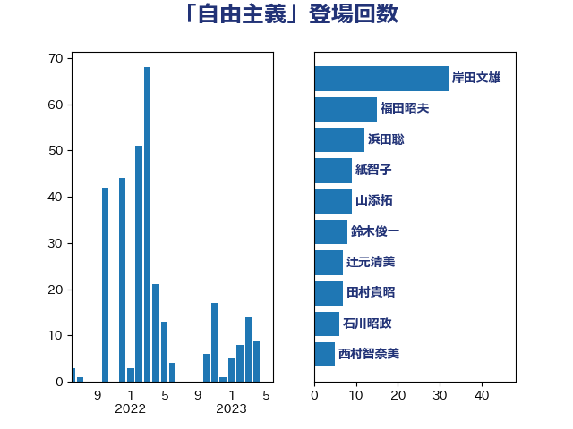

単語「自由主義」

| 岸田文雄 | 自由民主党 | 32 回 |
| 福田昭夫 | 立憲民主党 | 15 回 |
| 浜田聡 | NHK党 | 12 回 |
| 紙智子 | 日本共産党 | 9 回 |
| 山添拓 | 日本共産党 | 9 回 |
| 鈴木俊一 | 自由民主党 | 8 回 |
| 辻元清美 | 立憲民主党 | 7 回 |
| 田村貴昭 | 日本共産党 | 7 回 |
| 石川昭政 | 自由民主党 | 6 回 |
| 西村智奈美 | 立憲民主党 | 5 回 |
| 田村智子 | 日本共産党 | 5 回 |
| 小野泰輔 | 日本維新の会 | 5 回 |
| 宮本徹 | 日本共産党 | 5 回 |
| 上田英俊 | 自由民主党 | 5 回 |
| 梅谷守 | 立憲民主党 | 4 回 |
| 松野博一 | 自由民主党 | 4 回 |
| 斎藤アレックス | 国民民主党 | 4 回 |
| 志位和夫 | 日本共産党 | 4 回 |
| 山下芳生 | 日本共産党 | 4 回 |
| 大塚耕平 | 国民民主党 | 4 回 |
| 勝部賢志 | 立憲民主党 | 4 回 |
| 馬場伸幸 | 日本維新の会 | 3 回 |
| 青木愛 | 立憲民主党 | 3 回 |
| 近藤和也 | 立憲民主党 | 3 回 |
| 足立康史 | 日本維新の会 | 3 回 |
| 藤木眞也 | 自由民主党 | 3 回 |
| 笠井亮 | 日本共産党 | 3 回 |
| 田中健 | 国民民主党 | 3 回 |
| 泉健太 | 立憲民主党 | 3 回 |
| 森本真治 | 立憲民主党 | 3 回 |
| 北神圭朗 | 無所属 | 3 回 |
| 鈴木敦 | 国民民主党 | 2 回 |
| 舞立昇治 | 自由民主党 | 2 回 |
| 米山隆一 | 立憲民主党 | 2 回 |
| 竹内譲 | 公明党 | 2 回 |
| 福島みずほ | 社会民主党 | 2 回 |
| 浅田均 | 日本維新の会 | 2 回 |
| 櫻井周 | 立憲民主党 | 2 回 |
| 川合孝典 | 国民民主党 | 2 回 |
| 岡田直樹 | 自由民主党 | 2 回 |
| 山口壯 | 自由民主党 | 2 回 |
| 小川淳也 | 立憲民主党 | 2 回 |
| 宮本岳志 | 日本共産党 | 2 回 |
| 世耕弘成 | 自由民主党 | 2 回 |
| 馬淵澄夫 | 立憲民主党 | 1 回 |
| 音喜多駿 | 日本維新の会 | 1 回 |
| 長坂康正 | 自由民主党 | 1 回 |
| 野間健 | 立憲民主党 | 1 回 |
| 重徳和彦 | 立憲民主党 | 1 回 |
| 越智隆雄 | 自由民主党 | 1 回 |
| 茂木敏充 | 自由民主党 | 1 回 |
| 若林健太 | 自由民主党 | 1 回 |
| 秋野公造 | 公明党 | 1 回 |
| 福山哲郎 | 立憲民主党 | 1 回 |
| 神田潤一 | 自由民主党 | 1 回 |
| 石川香織 | 立憲民主党 | 1 回 |
| 石川博崇 | 公明党 | 1 回 |
| 田名部匡代 | 立憲民主党 | 1 回 |
| 玉木雄一郎 | 国民民主党 | 1 回 |
| 江田憲司 | 立憲民主党 | 1 回 |
| 森山浩行 | 立憲民主党 | 1 回 |
| 森屋宏 | 自由民主党 | 1 回 |
| 柴愼一 | 立憲民主党 | 1 回 |
| 杉久武 | 公明党 | 1 回 |
| 末次精一 | 立憲民主党 | 1 回 |
| 岸真紀子 | 立憲民主党 | 1 回 |
| 岩渕友 | 日本共産党 | 1 回 |
| 岩屋毅 | 自由民主党 | 1 回 |
| 山際大志郎 | 自由民主党 | 1 回 |
| 山谷えり子 | 自由民主党 | 1 回 |
| 山田勝彦 | 立憲民主党 | 1 回 |
| 山田俊男 | 自由民主党 | 1 回 |
| 山本太郎 | れいわ新選組 | 1 回 |
| 小西洋之 | 立憲民主党 | 1 回 |
| 小熊慎司 | 立憲民主党 | 1 回 |
| 小沼巧 | 立憲民主党 | 1 回 |
| 小池晃 | 日本共産党 | 1 回 |
| 小島敏文 | 自由民主党 | 1 回 |
| 小山展弘 | 立憲民主党 | 1 回 |
| 小宮山泰子 | 立憲民主党 | 1 回 |
| 小倉將信 | 自由民主党 | 1 回 |
| 寺田静 | 無所属 | 1 回 |
| 宗清皇一 | 自由民主党 | 1 回 |
| 太田房江 | 自由民主党 | 1 回 |
| 吉良州司 | 無所属 | 1 回 |
| 吉田宣弘 | 公明党 | 1 回 |
| 吉川沙織 | 立憲民主党 | 1 回 |
| 古川元久 | 国民民主党 | 1 回 |
| 原口一博 | 立憲民主党 | 1 回 |
| 加藤勝信 | 自由民主党 | 1 回 |
| おおつき紅葉 | 立憲民主党 | 1 回 |